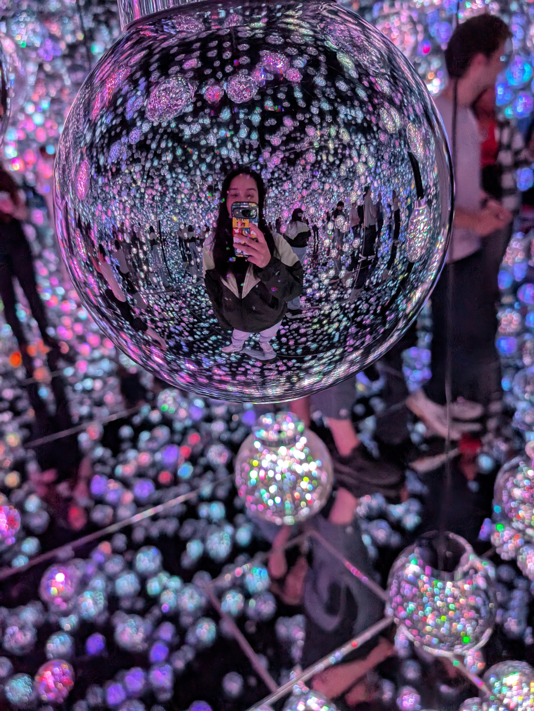

About Me
Diane Pham
I'm a UX specialist based in Chicago with over 8 years of experience. I started as a designer before finding my way into research and that's greatly shaped how I work. I know what it's like to be on the receiving end of a research handoff, which means I try to make my findings as clear and actionable as possible.
I'm most at home in the messy, generative parts of a project: talking to users, finding patterns, and helping teams figure out what to build next.